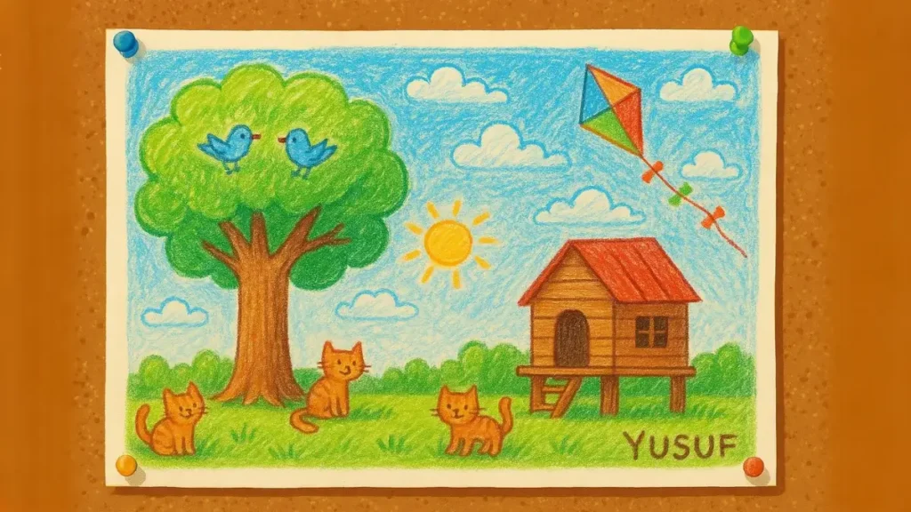

Bir varmış, bir yokmuş. Rüzgarın ağaç yapraklarını usulca salladığı, serçelerin neşeyle öttüğü küçük bir kasabada, rengarenk bir okul varmış. Bu okulda çocukların kahkahaları duvarlardan taşar, sabahları çan gibi çınlayan bir zil sesiyle dersler başlarmış. Okulun 1-B sınıfı, en canlı, en hareketli sınıflardan biriymiş. Çocuklar birlikte resim yapar, sayıları öğrenir, teneffüslerde ip atlayıp top oynarlarmış. Herkes birbirini tanır, anlaşmak için göz göze bakmaları bile yetermiş. Bir sabah sınıfın kapısı aralanmış ve içeri öğretmenle birlikte yeni bir öğrenci girmiş. Öğretmen gülümseyerek, “Çocuklar, bu Yusuf. Artık o da bizimle,” demiş. Tüm gözler bir anda Yusuf’a çevrilmiş. Yusuf sessiz ve biraz içine kapanık bir çocukmuş. Başını eğmiş, çantasını sıkıca tutmuş. Üzerinde annesinin özenle ütülediği ama biraz eski kalmış bir gömlek, ayağında da hafif yıpranmış bir ayakkabı varmış. Sınıfın içinde kısa bir sessizlik olmuş, ardından mırıltılar yükselmeye başlamış. “Çok sessiz gibi,” demiş biri fısıltıyla. “Bak çantasına, minicik,” diye eklemiş bir diğeri. En arka sırada oturan Kerem ise Yusuf’un yüzüne dikkatle bakmış ve “Hiç arkadaşımız gibi görünmüyor,” demiş kendi kendine. Yusuf sırasına geçmiş ama sınıftaki çocuklardan kimse yanına oturmamış. Dersi dikkatle dinlemiş, defterini tertemiz tutmuş ama kimse onunla konuşmamış. Teneffüs zili çaldığında ise herkes koşarak bahçeye çıkarken, Yusuf yerinden kalkmak yerine, camdan bakmayı tercih etmiş. Camdan uzun uzun dışarı bakmış. Koşan, gülen çocukları izlemiş ama içinden çıkıp onlara katılmak gelmemiş. İçinde tuhaf bir sıkışıklık hissetmiş; yabancı gibi, dışarıda kalmış gibi. Öğretmen Yusuf’un sessizliğini fark etmiş ama onu zorlamak istememiş. Belki biraz zamana ihtiyacı vardı, belki de güven duymaya. Sınıf arkadaşları ise Yusuf hakkında çoktan kararlarını vermiş gibiydi. Ertesi gün resim dersi yapılmış. Öğretmen “Hayalinizdeki yeri çizin,” demiş. Yusuf pastel boyalarını çıkarıp, kağıdın ortasına büyük bir ağaç ve altında tahta bir ev çizmiş. Renkler öylesine canlı, detaylar öylesine inceymiş ki, resmi gören herkes bir an durup bakakalmış. Kuşlar, gökyüzü, bahçedeki kediler. Her şey yerli yerindeymiş. Öğretmen resmi çok beğenmiş ve sınıf panosuna asmış. Önyargı Masali
Zeynep resme uzun uzun bakmış. Ardından hafif şaşkınlıkla: “Bu resmi gerçekten Yusuf mu yaptı?” diye sormuş. Kerem bile yaklaşmış, “Ben bu kadar güzel bir resim görmedim,” demiş içinden. O andan sonra Yusuf’a duyulan merak gitgide büyümeye başlamış. Sınıfta ilk defa onun hakkında kötü değil, güzel şeyler konuşulmuş. Ama kimse hâlâ yanına gidip konuşmaya cesaret edememiş. Ertesi gün teneffüste Yusuf yine yalnız kalmış. Bahçede bir bankın ucuna oturmuş, ellerini dizlerine koyup diğerlerini izlemeye başlamış. Tam o sırada Zeynep yanına yaklaşmış. “Merhaba Yusuf,” demiş gülümseyerek. “Resmini çok sevdim, uçurtmaları çizmen çok güzeldi.” Yusuf önce bir şey diyememiş ama sonra başını kaldırıp hafifçe gülümsemiş. “Uçurtmaları çok severim,” demiş utangaçça. “Ben de,” demiş Zeynep ve ardından hiç beklenmedik bir cümle kurmuş: “İstersen biraz sek sek oynayabiliriz.” Yusuf biraz düşünmüş ama sonra başını sallayıp ayağa kalkmış. İlk taş atışını kaçırmış ama Zeynep onu cesaretlendirmiş. “Hiç önemli değil, birlikte öğreniriz,” demiş. Birkaç dakika sonra Yusuf kahkahalar atarak zıplamaya başlamış. Bahçede oynayan diğer çocuklar olanları fark etmiş. Kerem topu elinde tutup oyunu bırakmış, onları izlemeye başlamış. Çünkü ilk defa Yusuf’u gülerken görmüş ve içi tuhaf bir şekilde kıpırdamış. Ertesi gün teneffüs başladığında Kerem yanlarına gitmiş. “İstersen futbol da oynarız,” demiş. Yusuf şaşırmış ama başını sallamış. Ardından yumuşak bir sesle “Ben aslında iyi bir kaleciyim,” demiş. Top oynarken Yusuf’un refleksleri dikkat çekmiş. İki gol kurtarmış, herkes şaşkınlıkla alkışlamış. Kerem dönüp Zeynep’e bakmış ve gülümsemiş: “Meğer gerçekten çok iyi bir kaleciymiş.” Zamanla Yusuf sınıfın ayrılmaz parçası olmuş. Her sabah arkadaşları onu beklemiş, her teneffüste birlikte oynamışlar. Derslerde artık elini kaldıran, fikrini söyleyen bir Yusuf varmış. Öğretmen bir gün tahtaya büyükçe bir başlık yazmış: “Arkadaşlık Günü.” Herkesten sınıfta birini anlatmasını istemiş. Sıra Zeynep’e geldiğinde gülümseyerek anlatmış: “Yusuf’a başta hiç ısınamamıştık ama meğer içi ne kadar güzelmiş.” Kerem de söz almış. “Ben onun sıkıcı biri olduğunu sanmıştım. Ama şimdi onunla oynamadığım gün eksik gibi geliyor,” demiş. Yusuf ise en sonunda ayağa kalkmış. “İlk geldiğimde çok yalnız hissettim. Ama şimdi burada bir ailem var gibi. İyi ki bu sınıfa gelmişim,” demiş. Herkes alkışlamış, hatta bazıları dayanamamış ve gidip Yusuf’a sarılmış. O günden sonra sınıfa kim gelirse gelsin, önce dinlenmiş, sonra tanınmış. Artık kimse sadece görünene göre karar vermemiş. Çünkü çocuklar artık biliyormuş ki, tanımadan hiçbir kalbin gerçek rengi anlaşılmazmış. Önyargı Masalının sonunda uçurtmalar biraz daha yükseğe uçmuş. Yusuf’un kalbi hafiflemiş, gülüşü artık eksik kalmamış. Ve sevgi, hiç beklenmedik anda kapıyı çalmış. Önyargı Masalına benzeyen çocuk masalları okumak için bağlantıya tıklayabilirsiniz. En güzel sesli masal kitaplarını ücretsiz bir şekilde dinlemek için youtube kanalımızı takip edebilirsiniz.